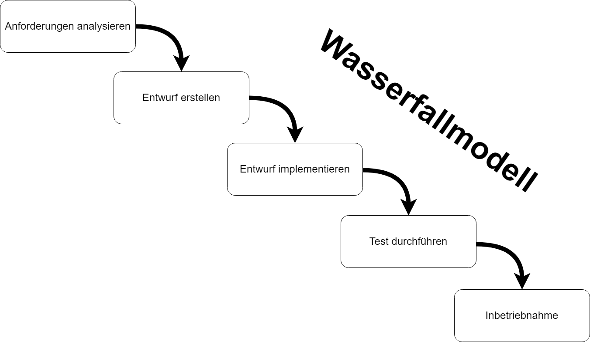

Im Wasserfallmodell „fließt“ eine Projektphase in die Nächste - immer in eine Richtung, ohne die Reihenfolge zu verändern, wie ein Wasserfall eben.
Anforderungen analysieren
Entwurf erstellen
Entwurf implementieren
Test durchführen
Inbetriebnahme
| Vorteile | Nachteile |
|---|---|
| Einfache Struktur mit klaren Vorgabe | Starre Reihenfolge und damit wenig flexibel |
| Sichtbarer Projektfortschritt mithilfe von Meilensteinen | Spätes erkennen von Umsetzungsfehlern |
| Arbeitsumfang kann mit dem Projektbeginn eingeschätzt werden | Abgrenzung der einzelnen Phasen vor allem in komplexen Projekten schwierig |
| Planungssicherheit und Kontrolle | Schwierig alle Phasen reibungslos nacheinander abzuarbeiten |
| Lösungswege fließen in die Projektplanung mit ein | Bei Fehlern und Änderung geht es meist zurück in die Entwurfsphase |
| Kalkulation von Zeit-, Budget- und Arbeitsaufwand | Teure Fehlerkorrektur |
Im erweiterten Wasserfallmodell fällt die strikte Vorgabe eine Phase nach der anderen zu bearbeiten weg. Dadurch kann das Projektteam in eine vorhergehende Phase zurückzukehren, um z.B. im Nachhinein erfasste Fehler zu beheben.